На черном фоне эффектно выделяется открывающаяся дверь. Вы когда- нибудь задумывались о том, сколько раз вам встречалась таинственная дверь, окутанная тенями? Дверь, за которой скрывается неуверенность, неизвестность и зачастую ужас. Сможете ли вы выжить?
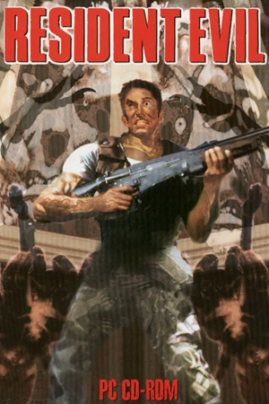
Resident Evil
Дата выпуска: 22.03.1996
Платформы: PlayStation, Windows, Sega Saturn (1997), Mobile Phone (2004), Nintendo DS (2006)
Resident Evil (1996) — первая игра в культовой серии survival horror от Capcom, положившая начало жанру.
Действие разворачивается в мрачном особняке, полном зомби, мутантов и загадок. Игроку предстоит выжить, решать головоломки и сражаться с монстрами,
исследуя историю корпорации Umbrella. Игра славится своей напряжённой атмосферой, инновационной камерой с фиксированными ракурсами и ограниченными ресурсами.
Resident Evil стала одной из первых игр, успешно соединивших ужасы с глубоким повествованием.
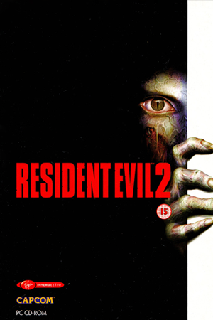
Resident Evil 2
Дата выпуска: 21.01.1998
Платформы: PlayStation, Windows (1999), Nintendo 64 (1999), Sega Dreamcast (1999), Nintendo GameCube (2003), PlaySation Portable (2007)
Resident Evil 2 — продолжение культовой серии survival horror от Capcom, развивающее события первой игры.
Действие происходит в заражённом Раккун-Сити, где два героя, Леон Кеннеди и Клэр Редфилд, пытаются выжить, сталкиваясь с ордами зомби
и биологическими экспериментами корпорации Umbrella. Игра углубляет сюжет, представляя систему двух сценариев для каждого героя,
что добавляет реиграбельности. Атмосфера, напряжение и кинематографичный подход сделали игру шедевром жанра.
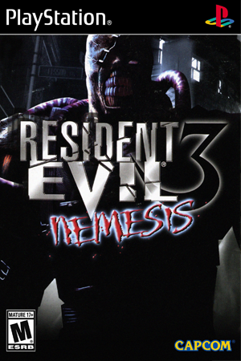
Resident Evil 3: Nemesis
Дата выпуска: 22.09.1999
Платформы: PlayStation, Windows (2000), Dreamcast (2000), Nintendo GameCube (2003)
Resident Evil 3: Nemesis продолжает историю Раккун-Сити, показывая финальные дни эпидемии T-вируса.
Джилл Валентайн пытается выжить в городе, преследуемая неуязвимым монстром Немезисом. Игра делает акцент на экшене и
динамике, вводя элементы выбора и возможность уворачиваться от атак. Атмосфера паники и угрозы от преследующего врага сделали её уникальной среди игр серии.
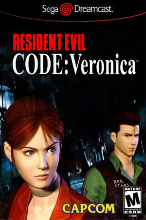
Resident Evil CODE: Veronica
Дата выпуска: 03.02.2000
Платформы: Dreamcast, PlayStation 2 (2001), Nintendo GameCube (2003), PlayStation 3 (2011), Xbox 360 (2011)
Resident Evil CODE: Veronica — первая игра серии с полноценной 3D-графикой,
продолжившая сюжет о борьбе с корпорацией Umbrella. Клэр и Крис Редфилд оказываются на острове Рокфорд и в Антарктике,
сражаясь с новыми мутантами и раскрывая тайны семьи Ашфорд. Игра акцентирует внимание на повествовании и драматичных сюжетных поворотах.
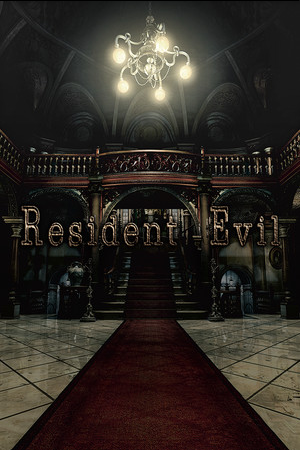
Resident Evil Remake
Дата выпуска: 22.03.2002 | HD Remaster: 27.11.2014
Платформы: Nintendo GameCube, Nintendo Wii (2008) | HD Remaster: Windows, PlayStation 3, PlayStation 4, Xbox 360, Xbox One, Nintendo Switch (2019)
Resident Evil Remake — полноценное переосмысление оригинальной игры 1996 года, с новой графикой,
улучшенным геймплеем и расширенным сюжетом. Игра сохраняет дух оригинала, добавляя новые локации, загадки и врагов.
Это не просто ремастер, а образец качественного ремейка, задавший новый стандарт в индустрии.
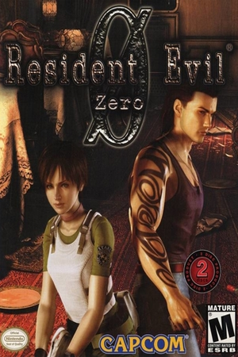
Resident Evil Zero
Дата выпуска: 12.11.2002
Платформы: Nintendo GameCube, Nintendo Wii (2008), Windows (2016), PlayStation 3 (2016), PlayStation 4 (2016), Xbox 360 (2016), Xbox One (2016), Nintendo Switch (2019)
Resident Evil Zero рассказывает предысторию первой части, показывая события, которые привели к катастрофе в особняке Спенсера.
Игра вводит систему двух персонажей, Ребекки Чемберс и Билли Коэна, которые работают в команде, чтобы выжить.
Локации варьируются от поезда до лабораторий, сохраняя атмосферу ужаса.
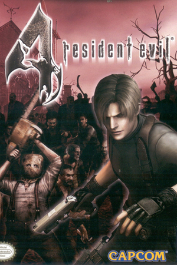
Resident Evil 4
Дата выпуска: 11.01.2005
Платформы: Nintendo GameCube, PlayStation, Windows (2007), Wii (2007), IOS (2009), Zeebo (2009), PlayStation 3 (2011), Xbox 360 (2011), Android (2013), PlayStation 4 (2016), Xbox One (2016), Nintendo Switch (2019)
Resident Evil 4 представляет собой революционный экшен-хоррор, который изменил направление серии.
Игра переносит игрока в европейскую деревню, где Леон Кеннеди спасает дочь президента США.
Обновлённая камера за плечом, захватывающий экшен и множество новых механик сделали её классикой.
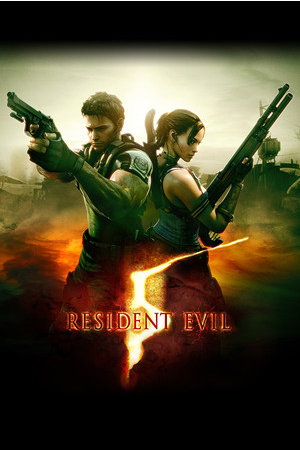
Resident Evil 5
Дата выпуска: 05.03.2009
Платформы: PlayStation 3, Xbox 360, Windows, PlayStation 4 (2016), Xbox One (2016), Nintendo Switch (2019)
Resident Evil 5 — динамичный экшен в духе survival horror, развивающийся в Африке, где Крис Редфилд и Шева Аломар
противостоят биотеррористической угрозе. Игра делает акцент на кооперативном геймплее и насыщенных сражениях, предлагая новые виды врагов и
масштабные локации. События раскрывают планы Альберта Вескера и последствия деятельности корпорации Umbrella, став важным этапом в сюжете серии.
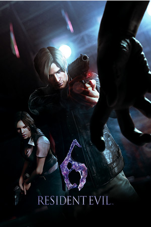
Resident Evil 6
Дата выпуска: 04.10.2012
Платформы: PlayStation 3, Xbox 360, Windows (2013), PlayStation 4 (2016), Xbox One (2016), Nintendo Switch (2019)
Resident Evil 6 сочетает экшен и survival horror, предлагая четыре сюжетные кампании, каждая со своим стилем геймплея.
Игроки управляют классическими персонажами (Леон, Крис) и новыми героями, борясь с глобальной биотеррористической угрозой.
Игра предлагает разнообразие локаций, от зомби-апокалипсиса до боевиков с монстрами.
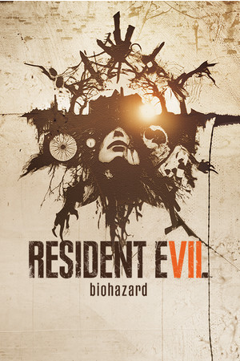
Resident Evil Biohazard
Дата выпуска: 24.01.2017
Платформы: PlayStation 4, Xbox One, Windows, Nintendo Switch (2018), PlayStation 5 (2022), Xbox Series X|S (2022), IOS (2024), iPadOS (2024), macOS (2024)
Resident Evil 7 вернулась к корням survival horror, предлагая вид от первого лица и мрачную атмосферу.
Игрок управляет Итаном Уинтерсом, который пытается найти пропавшую жену, попадая в ловушку каннибальской семьи Бейкеров.
Узкий фокус на ужасы и изоляцию стал новым началом для серии.
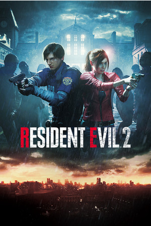
Resident Evil 2 Remake
Дата выпуска: 25.01.2019
Платформы: PlayStation 4, Xbox One, Windows, PlayStation 5 (2022), Xbox Series X|S (2022), Nintendo Switch (2022), IOS (2024), iPadOS (2024), macOS (2024)
Полноценный ремейк Resident Evil 2 с современной графикой, изменённым геймплеем и переработанным сюжетом.
Игра сохраняет дух оригинала, добавляя глубины и деталей, делая события более мрачными и кинематографичными.
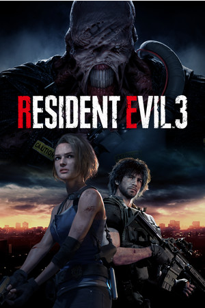
Resident Evil 3 Remake
Дата выпуска: 03.04.2020
Платформы: PlayStation 4, Xbox One, Windows, PlayStation 5 (2022), Xbox Series X|S (2022), Nintendo Switch (2022)
Ремейк Resident Evil 3 обновил графику, механику и добавил динамики. Джилл Валентайн противостоит Немезису в хаосе Раккун-Сити,
предлагая интенсивный, но сокращённый опыт.
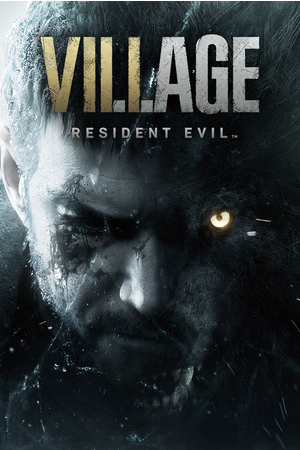
Resident Evil Village
Дата выпуска: 07.05.2021
Платформы: PlayStation 4, Xbox One, Windows, PlayStation 5, Xbox Series X|S, macOS (2022), Nintendo Switch (2022), IOS (2023)
Resident Evil Village продолжает историю Итана Уинтерса, соединяя survival horror с экшеном. Итан ищет похищенную дочь в загадочной деревне, сталкиваясь
с Леди Димитреску и другими жуткими антагонистами.
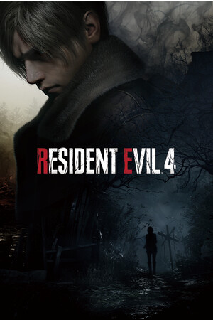
Resident Evil 4 Remake
Дата выпуска: 24.03.2023
PlayStation 4, Windows, PlayStation 5, Xbox Series X|S, macOS (2023), IOS (2023)
Ремейк Resident Evil 4 модернизирует культовый оригинал с улучшенной графикой, обновлённым геймплеем и переработанным сюжетом.
Игра сохранила культовые элементы, добавив современности и глубины.